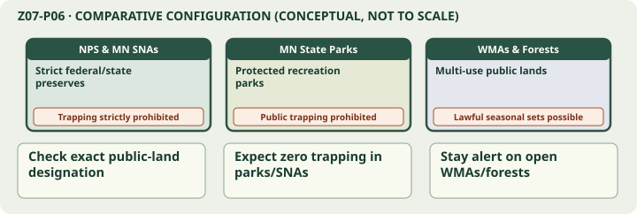

Z07-P06 · Traps and snares · New manuscript
National Park, State Park and SNA Trapping Prohibitions
Distinguish public-land categories where trapping is strictly prohibited from multiple-use lands where regulated seasonal trapping may occur.
When it applies · Navigating overlapping federal, state, county, and municipal land boundaries in Minnesota.
Equipment · Current land-ownership map (NPS, MN DNR State Parks, SNAs, WMAs, National/State Forests).

Actions
- Verify exact land-management status before travel: National Park System lands (36 CFR 2.1), Minnesota Scientific and Natural Areas (SNAs), and Minnesota State Parks generally prohibit trapping and wildlife disturbance.[L07, L08]
- Recognize that State Forests, National Forests, Wildlife Management Areas (WMAs), and county tax-forfeited lands may allow lawful regulated trapping during open autumn and winter seasons.[L01, L07]
- Check posted trailhead kiosks and agency maps at every boundary crossing because park and forest borders often sit immediately adjacent.[L07, L08]
Failure recognition · Crossing from a state park into an adjacent WMA or state forest with an off-leash dog during autumn furbearer season exposes pets to lawful regulated sets.[L07, L10]
Verify · Land-use category and seasonal trapping status are confirmed before entering or unleashing pets on public lands.[L07, L08, L10]
Stop or change course · Stop and leash pets immediately whenever leaving a park boundary onto multi-use forest or WMA land during open trapping seasons.[L07, L10]
Evidence and editorial notes
- L01 · Minnesota DNR · Minnesota Trapping Regulations and Fur Harvest Rules (Current web edition)
- Section: Minnesota trapping licensing, seasons, and statutory limits · Conditions: Any regulated trapping activity or legal reference in Minnesota
Support: Trapping is strictly regulated by license, season, species, trap type, set location, check intervals, and landowner permission; unauthorized trapping is illegal.
Limitations: Emergency narratives never create an exemption to set traps or snares; verify current statute and DNR handbook every season. · Conflicting evidence: None noted.
Editorial note: Primary Z07 legal boundary. · Specialist reviewer: Wildlife law and DNR enforcement reviewer
Primary source · checked 2026-11-25 - L07 · Minnesota DNR · Minnesota State Park Rules and Resource Collecting Restrictions (Current web edition)
- Section: Public park, trail, and recreation-area trapping prohibitions · Conditions: Minnesota State Parks, campgrounds, and restricted public trails
Support: Trapping is generally prohibited in Minnesota State Parks, SNAs, and designated high-use public recreation corridors.
Limitations: Public multiple-use forests and WMAs may permit lawful seasonal trapping; leash pets and check posted notices. · Conflicting evidence: None noted.
Editorial note: Clarifies where bystanders/pets may encounter lawful sets. · Specialist reviewer: Public-lands manager
Primary source · checked 2026-11-25 - L08 · National Park Service / eCFR · 36 CFR 2.1 Preservation of Natural, Cultural and Archeological Resources (Current CFR)
- Section: Federal park prohibitions on traps, snares, and wildlife disturbance · Conditions: National Park System lands and monuments
Support: Possessing or deploying traps or snares or disturbing wildlife on National Park lands is prohibited under federal regulation.
Limitations: Adjacent non-NPS lands follow state or tribal rules; know exact boundary lines. · Conflicting evidence: None noted.
Editorial note: Federal land-boundary clarity. · Specialist reviewer: Federal land-use reviewer
Primary source · checked 2026-11-25 - L10 · Minnesota DNR · Minnesota Trapping Regulations and Fur Harvest Rules (Current web edition)
- Section: Human and pet hazard recognition around lawful trapping areas · Conditions: Walking dogs or hiking in open public-use lands during furbearer seasons
Support: Keep dogs on short leashes on open multi-use lands during autumn/winter trapping seasons, avoid bait piles and shoreline culverts, and carry vet contact info.
Limitations: Body-gripping and cable devices present rapid fatal risk to unleashed pets; prevention via leashing is far safer than emergency release. · Conflicting evidence: None noted.
Editorial note: Core Z07 bystander & pet hazard prevention. · Specialist reviewer: Veterinary and outdoor-safety reviewer
Primary source · checked 2026-11-25
Source lineage · New manuscript (Z07 P18 environmental restrictions) · Classification · New manuscript.